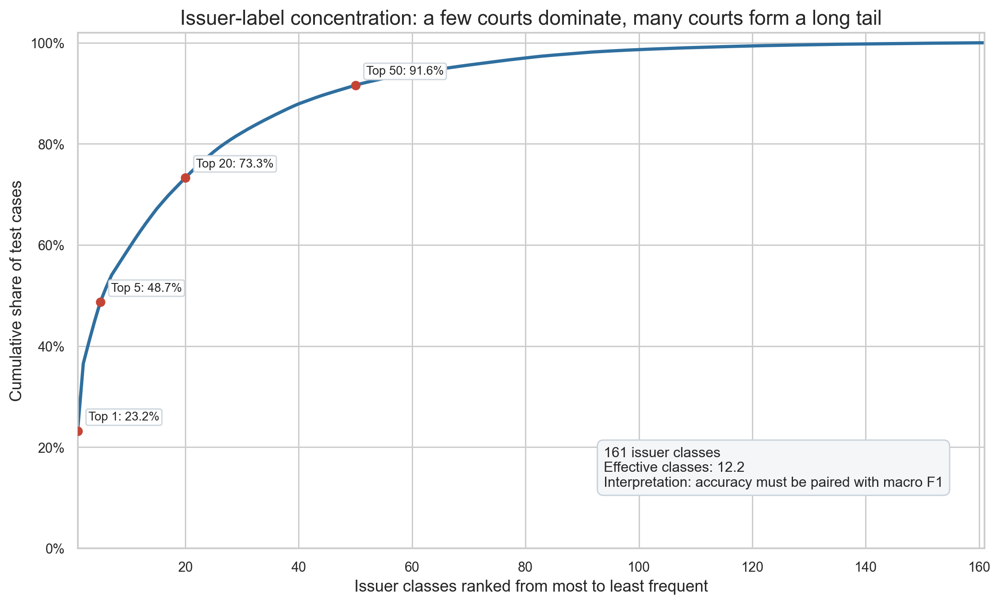
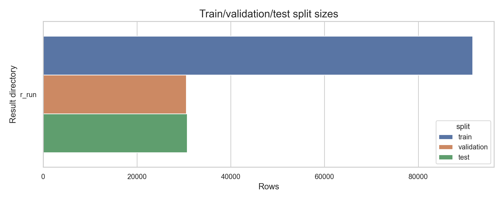
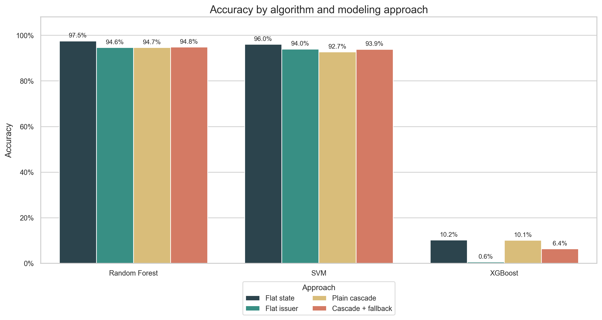
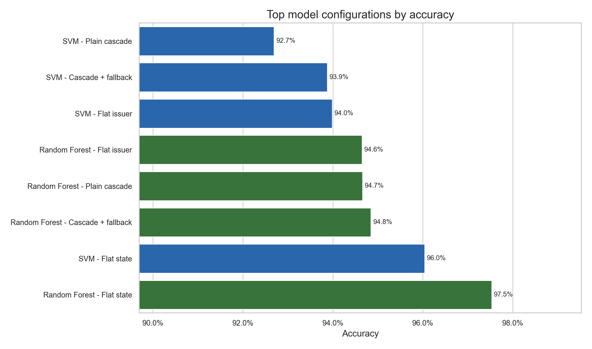
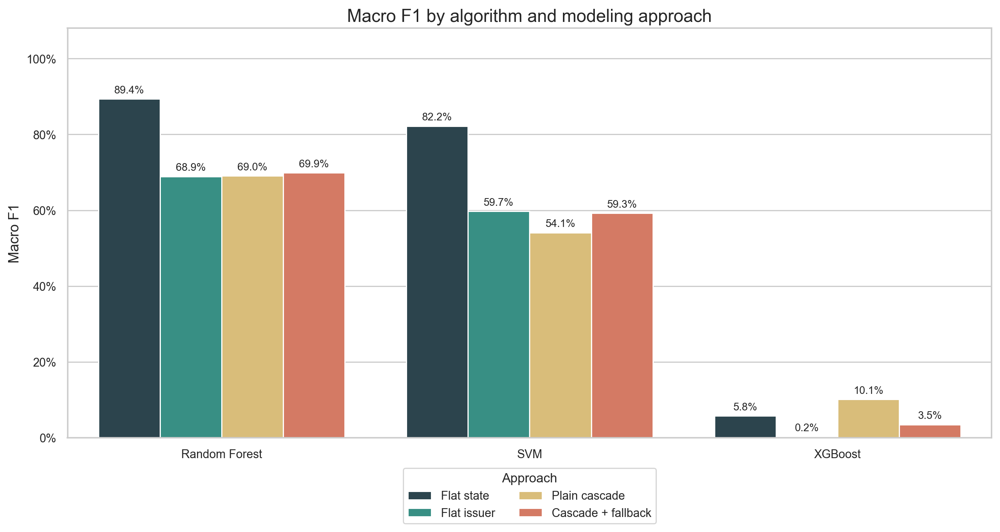
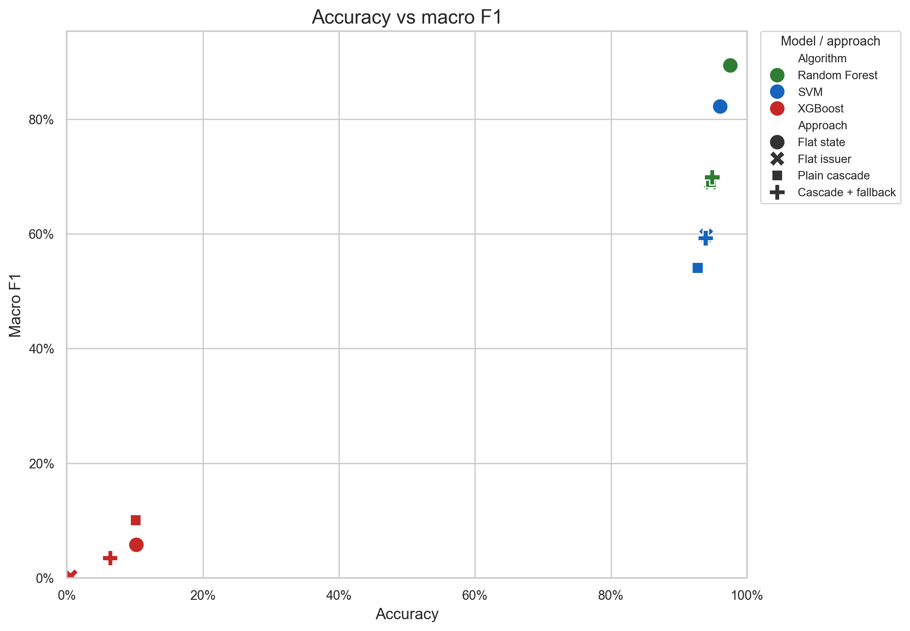
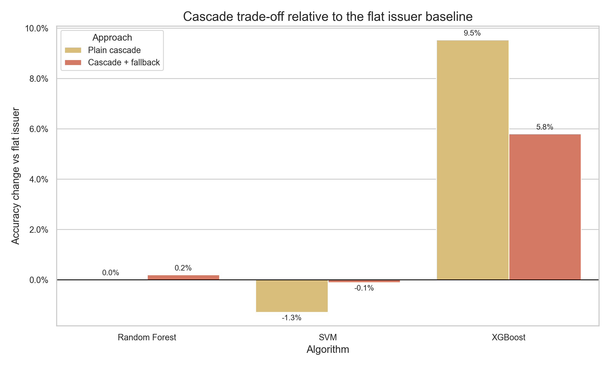
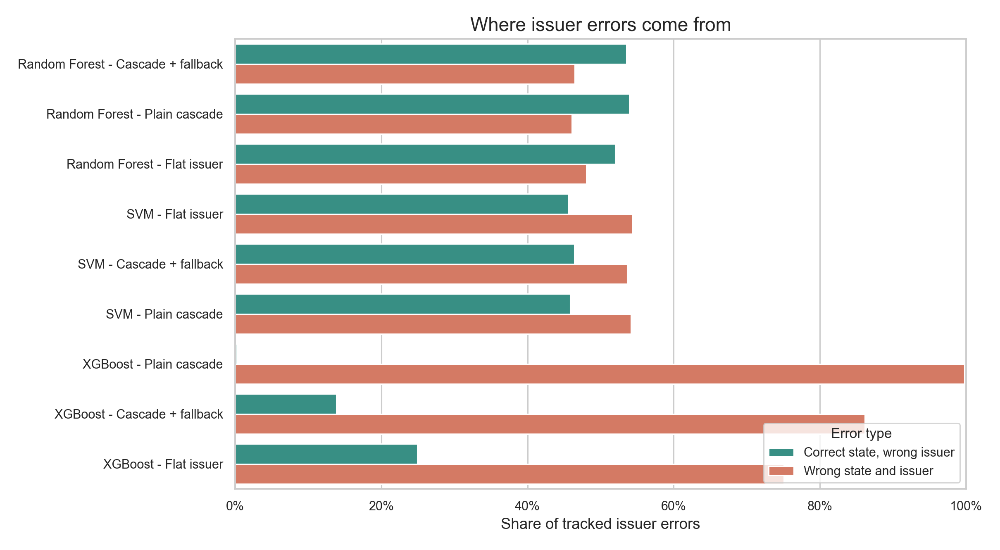
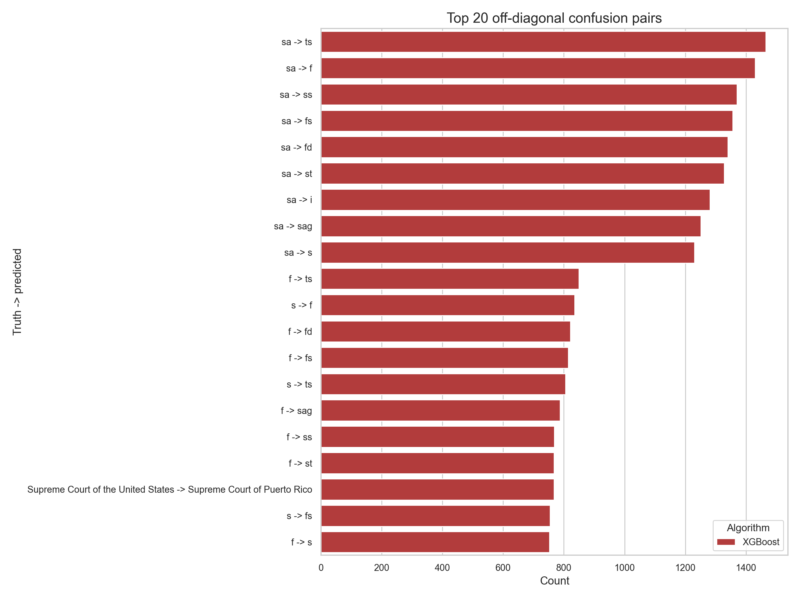
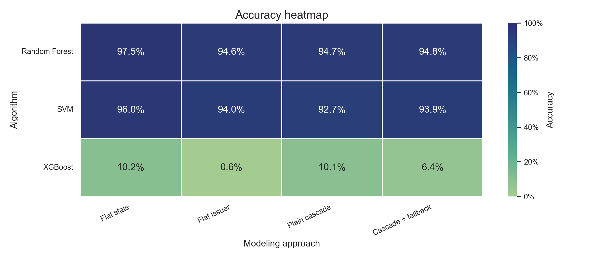

Hierarchical Cascade Classification for Court Issuer Prediction
Generated: May 3, 2026 | Dataset: CourtListener (153,574 cases)
| Rank | Algorithm | Approach | Accuracy | Macro F1 | Status |
|---|---|---|---|---|---|
| 1 | Random Forest | Flat State | 97.53% | 0.894 | Production |
| 2 | SVM | Flat State | 96.04% | 0.822 | Baseline |
| 3 | Random Forest | Cascade+Fallback | 94.85% | 0.699 | Robust |
| 4 | Random Forest | Plain Cascade | 94.66% | 0.690 | Acceptable |
| 5 | Random Forest | Flat Issuer | 94.65% | 0.689 | Acceptable |
📌 View all 16 models in FINAL_MODEL_COMPARISON.csv
Curated visuals for the report and presentation. Start with the data story, then move through model comparison, cascade trade-offs, and validation errors.
Ranks issuer classes from most to least frequent and shows cumulative test-set coverage.

Shows the supervised learning split used for training, model selection, and final testing.

Compares each algorithm and modeling approach using overall correctness.

Ranks the strongest model configurations for quick model selection.

Shows class-sensitive model quality when each label receives equal weight.

Highlights models that look strong on accuracy but weaker on balanced class performance.

Compares cascade systems against flat issuer baselines to quantify the trade-off.

Separates mistakes into wrong-state errors and correct-state but wrong-issuer errors.

Shows the most frequent true-to-predicted label mistakes across evaluated systems.

Summarizes model and approach combinations in a compact comparison matrix.

| Step | Action | Status |
|---|---|---|
| 1 | Review model performance (see MODEL_EVALUATION_REPORT.md) | Ready |
| 2 | Run test suite: Rscript scripts/TEST_SUITE.R |
Ready |
| 3 | Deploy best model (see DEPLOYMENT_GUIDE.md) | Ready |
| 4 | Monitor predictions (run BENCHMARK_SCRIPT.R on new data) | Ongoing |
| 5 | Retrain if accuracy drops below 95% | Ongoing |